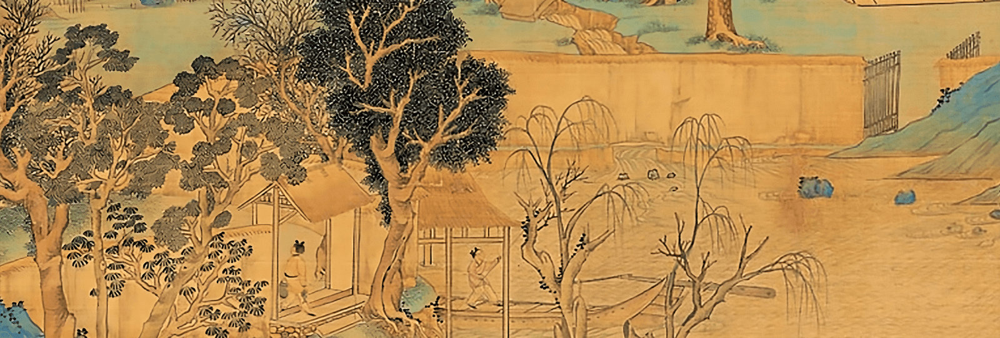

Da Cheng Quan Paris

Notre association vous propose de découvrir cette science ancestrale, qui est une voie de connaissance et une approche intrinsèque des lois naturelles.
Pendant des siècles, cet art chinois est resté secret. Ce n’est que récemment qu’il a été mis à la portée de tous par Maître Wang Xiangzhai (1890-1963) et actuellement par Maître Guo Guizhi. Vous vous tenez debout comme un arbre, seul et sans bouger, en observant les changements internes dans vos muscles et vos organes.
Extérieurement il n’y a pas de mouvements, tout se passe à l’intérieur.
Il s’agit dans un premier temps de travailler les postures immobiles. Cela améliore grandement le capital santé, par une accélération du sang et du chi. Pour le côté martial de cette pratique, cela requiert finesse et observation : il s’agit d’actualiser et de développer une force interne qui puisse s’exprimer dans six directions. Pour cela nous utiliserons des micro-mouvements générés par des moments de détente et de tension, le tout guidé par la force élastique des tendons.
Contactez-nous